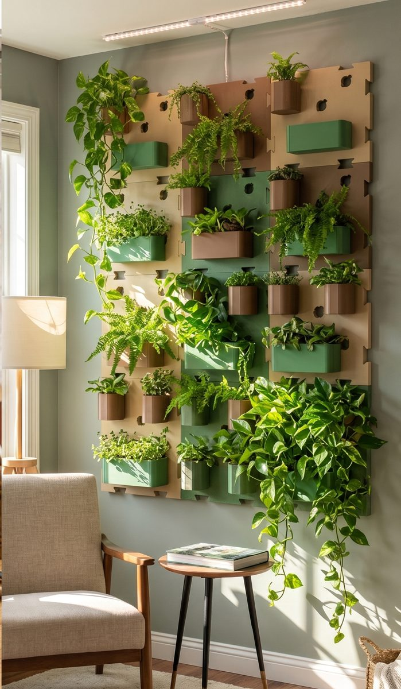

Modular wall-mounted plant system
Build a green wall from walls, pots and fillers. Choose the colour, the mounting and the pots, and we print and assemble it for you.

A 200 × 200 mm plate with nine pot holes and dovetail edges. Mount it on a DIN rail, with nail holes like a picture, or with glue.
Small and large pots share one bayonet connector. Push in, turn 90° and the pot is locked. Turn back to swap it, no tools needed.
Dovetail fillers join walls into bigger layouts. Add walls up, down, left or right, now or later.